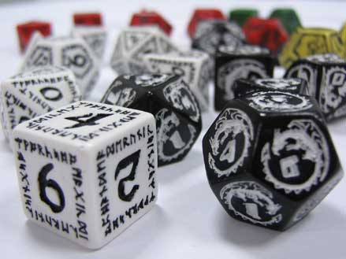

 Klasyczną grę fabularną można porównać do teatru improwizacji, w którym osoba prowadząca (najczęściej zwana Mistrzem Gry) odgrywa rolę autora scenariusza, reżysera, narratora i zazwyczaj aktora ról postaci drugoplanowych – gracze natomiast są aktorami pierwszoplanowymi, jednakże nieznającymi scenariusza i zmuszonymi improwizować i reagować na sytuacje, jakie stawia przed nimi Mistrz Gry. Cała rozgrywka toczy się prawie wyłącznie w oparciu o słowne opisy, czasem wspomagane muzyką lub taktyczną planszą – Mistrz Gry opisuje graczom ich otoczenie i akcje wykonywane przez bohaterów niezależnych, gracze natomiast opisują czynności wykonywane przez ich postaci. Do zadań Mistrza Gry należy również (zazwyczaj wspomagana ustalonymi regułami) decyzja, które akcje podejmowane przez graczy osiągną zamierzone efekty, a które nie. Stopień dozwolonej identyfikacji między graczami a odgrywanymi przez nich postaciami – wypowiadanie się w pierwszej osobie, wykorzystanie rekwizytów, kontakt fizyczny z pozostałymi graczami – jest kwestią umowną i zależy wyłącznie od stopnia
Do gry potrzebne są często również podręczniki ich cena wacha się zwykle w okolicach 20€ (15£).
W obecnej chwili najpopularniejszymi serwisami na temat rpg są: Poltergeist, Gildia oraz Gryfabularne.pl.
Gra fabularna (inaczej RPG, z ang. role-playing game, nieraz zwana grą wyobraźni, potocznie erpegiem lub rolplejem)